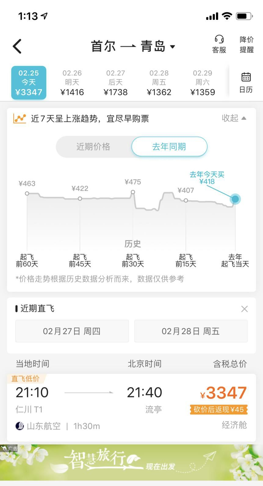

韩国飞中国航班爆满，多城市加强入境人员防疫
原文链接 备份链接 记者：陈晓双 “ 2月25日，首尔中转日本到青岛的经济舱单程机票含税价格一度破万元。 ” 韩国中央防疫对策本部25日通报,截至当地时间当天下午4时,韩国较当天上午9时新增84例新冠肺炎确诊病例,累计确诊病例达977例, …

青岛、威海等城市并未出现传闻中“大批韩国人来华躲避疫情”的现象，但山东各地已经相继采取措施，防止在韩国愈演愈烈的疫情波及山东半岛
文 |《财经》记者 马霖 杨立赟 陈亮 吴琼
编辑 | 余乐
近期新冠疫情在韩国蔓延，确诊人数已从一周前的35人猛增至2月26日中午的1146人。随着韩国疫情暴发，与韩国地理位置接近、且有大量人员和商务往来的山东青岛、烟台、威海，以及东北地区的大连、延吉等城市开始感受到了防控疫情回流的新压力。
这也是新冠疫情从武汉出现以来，中国大陆第一次面临疫情自境外回流的风险。
近日来，网上接连爆出“首尔至青岛机票暴涨”、“大批韩国人涌入中国躲避疫情”等传闻。《财经》记者多方采访了解到，近几日从韩国到山东半岛各城市的航班乘客人数确有明显增长，但大多数乘客均为中国公民，并未出现“大批韩国人躲避疫情”的现象。而且，机票价格的增长也与航班减少等因素有关。
《财经》记者了解到，由于威海等城市已宣布“所有入境人员一律隔离14天”或类似的严厉管控措施，已有部分原准备前往这些城市的韩国人退掉机票，改变了计划。接受《财经》记者采访的多位韩国人和在韩的中国人也都表示，不会为了躲避疫情而跑到中国。
但是，新冠病毒的传播和扩散并不会区分国籍。由于由韩国入境人员确实有所增长，青岛、威海等城市面临的境外疫情回流风险是切实存在的。为此，各城市近两天相继采取各种措施，加强了对入境人员的监测和管理力度。
入境人员八成为中国人
根据携程提供给《财经》的机票数据，从首尔飞青岛、烟台、威海、大连这几个城市，2月25日当天相较2月19日当天的出行人次增长了近三倍；就机票价格看，2月25日相较2月19日的平均机票价格增长了近六成。仅2月24日一天，首尔飞往上述四个中国城市的预订量就比前一天增长了近六成，出行人次也增长超过五成。
与此同时，根据携程平台的机票数据，中国飞往韩国2月15日-2月24日的订单量下降了超过五成，对应出行人次也下降超过五成。
去哪儿网平台数据显示，从2月17日至2月24日，韩国有首尔、釜山、清州、济州岛、大邱与国内各城市有航班往来。其中票量呈上升状态的只有首尔和大邱两个航点，且疫情最为严重的大邱飞往国内的机票每天未突破两位数。
来自多个渠道的信息证明，近期韩国飞往中国的航班价格上涨，亦有此前受新冠疫情影响，各大航空公司均减少了往来中国航班的原因，并不完全由韩国疫情爆发导致。
中国往返韩国的航班总量大，但自疫情发生后，各航空公司取消了多数班次，航班执行率仅在20%左右。由于受到疫情的影响，韩国自2月4日也出台一系列关于中国公民的签证优惠收紧的政策。虽然这一情况在2月17日得到缓解，航班执行率仍因国内需求没有恢复而无法得到有效提升。
大量航班没有恢复，突然的需求上涨导致航班价格瞬间攀升。2月25日，首尔至青岛单程航线航班含税价格一度破万。这对于去年同期成交价格在500-700元来说可谓“天价”。

（2月25日，首尔至青岛航线单程直飞航班，当日下午1:13搜索去哪儿网含税价格为3347元，是去年同期418元的8倍。）
“不过，这一价格在半小时后就已看不到。2月25日一班晚上9点起飞的航班，最低含税价格在3400元左右。”去哪儿网相关负责人说。2月26日、27日起飞的该航线航班，能够购买到低于2000元的含税直飞机票。
随着恐慌情绪的缓解，不少航班的价格已在向下调整。“例如2月26日中午13:05起飞的KE861航班，2月25日12:36搜索时价格是4100元含税，到14:16时搜索已经降至3650元。”上述人员称，“疫情尚未结束，价格忽高忽低的情况仍会出现。”

（随着恐慌情绪的缓解，2月25日下午，不少航班的价格在向下调整。）
据“青岛发布”的消息，疫情发生前，青岛机场的韩国航线日均进港航班21个，进港旅客3622人。近期的日均进港航班只有6个架次，进港旅客800人次左右，客座率达85%-90%。在进港旅客中，中国籍旅客超过80%，韩籍旅客不到20%。韩籍旅客大都在中国工作或求学，以产业人士和学生为主。
山东航空也回复《财经》记者称，目前山东航空韩国飞中国的航班，中国旅客占比80%左右。目前山东航空在韩国登机时要对乘客进行体温检测，有症状不允许登机。2月25日起，机组执行完首尔航班后会采取居家隔离措施。
至于后续航班是否会取消？山东航空表示，首先要根据政府要求，其次要看市场需求。目前韩国来中国航班中中国旅客占比80%，说明市场有需求。除非政府明确说停航，在当下市场有需求的情况下，山航还是会保有合适的航班量。
一位经常往返于中韩两国的中国籍女士也告诉《财经》记者，近期从韩国坐飞机到青岛、威海、烟台等地的大部分是中国人。她说，很多长期居住在韩国的中国人，因为签证原因，需要定期出（韩国）境。这些人一般会选择青岛、威海入境，因为机票便宜，可以当天往返，方便他们办理出入境手续。
这位女士表示，机票涨价还有另外一个原因：大韩航空有一位客舱乘务员确诊，因此中国旅客最近都希望选择中国的航空公司，这也造成了中国航司的票价进一步上涨。
“韩流来袭”言过其实
最近几天，“韩国人大批涌入”的传闻已经让山东半岛的居民产生了一些恐慌情绪。
烟台是很多韩国人士选择工作定居的一座山东城市。25日，当地小区业主微信群里流传一张烟台黄海城市花园业主群的截图，是否真实暂时不详，群里有业主表示小区外有人未进小区门就被隔离，对韩国人士返回小区感到紧张。《财经》记者联系到一位该小区业主，该业主表示，这座小区里居住了比较多韩国人士，自己家楼上邻居也是一家韩国人，她表示没有听说有韩国人士疑似或感染新冠肺炎。
一位烟台居民向《财经》记者表示，由于不掌握可靠信息，看到一些微信群里转发韩国人士比较集中的小区的业主和物业聊天截图，以及一些关于疫情传播的无端猜测，会加剧恐慌。
她向记者转发烟台开发区科信物业向烟台碧海云天小区业主发布的近期疫情防控提醒，该提醒表示，“近期韩国日本疫情突发严重，从2月23日起有大批从国外返烟人士，碧海云天小区是韩国人聚集小区，连续几天已经多人返回小区。”该提醒也有言辞比较激烈的的部分，如“截止目前政府上级部门还未针对此类人群做出强制隔离命令，物业没有执法权，仅要求居家隔离可能出现的不可控因素太多。”
《财经》记者联系科信物业负责人，希望核实该信息，并了解目前是否有疫情上升的风险，对方表示要核实情况，但截至发稿尚未有回复。
据《财经》记者了解，近日进入青岛、烟台等地的韩国籍人士大多属于正常复工。
居住在首尔的《朝鲜经济》（Chosun Biz）杂志编辑吴光镇（Kwang Jin Oh）对《财经》记者表示，目前前往中国山东等地的大多是韩国籍侨民。“中国开始复工了，学校要开学了，在中国工作和留学的韩国人也要回中国，大多是中国人。”
中国韩国商会的一位韩国籍工作人员告诉《财经》记者，商会的下属韩国企业这两天没有反映入境难等问题，也暂未反映其他方面的困难，他了解到之前一些返回中国的韩国人士已经开始上班。
青岛悦华韩国国际学校的的一位工作人员告诉《财经》记者，韩国也有过年的传统，年前大约一半的韩国家长带着孩子回到韩国过年。往年这个时间，学校已经开学，受新冠肺炎疫情影响，现在学校老师还没上班，学校开学日期未定，还在等待指示。
他表示，从2月25日开始，按照青岛市政府的规定，从韩国飞到青岛的韩国人士将被接到个人家里，或者宾馆隔离。所以目前有很多韩国人不打算立刻回到中国，2月26日开始会有很多韩国人退机票，“因为回到青岛什么也做不了，直接隔离14天，所以就没必要回来了。”
针对此前一些中文报道所写的“韩国人来中国躲避疫情”，这位国际学校工作人员表示，他个人感觉这不符合实际情况。
山东半岛严防疫情蔓延
虽然并没有出现大批韩国人涌入的情况，但山东半岛各城市已经严阵以待。
2020年2月25日12-24时，山东省无新增新型冠状病毒肺炎确诊病例，累计确诊病例756例（含重症病例7例，危重症病例7例，治愈出院357例，死亡病例6例），已经少于韩国。累计确诊病例中，青岛有60人，烟台47人，威海38人。
目前中国政府尚未发布针对韩国入境人员的禁入或限入措施，但是，青岛、烟台、威海、大连、延吉等中韩人员往来频繁的城市已经各自出台措施，以防止疫情回流。
例如，威海要求从2月25日起，对从日本、韩国等国家来威海的入境人员，包括外籍人员和中方人员，全部统一接到宾馆免费集中居住，14天后解除集中居住。
据央视报道，2月25日上午由韩国仁川飞抵威海的济州航空7C8501航班上，发现有五名乘客体温异常。这五名乘客已送至医院进行医学诊治和观察，本次航班其余乘客均由大巴车统一送至指定酒店集中医学观察。
山东有10家收治新冠肺炎患者的定点医院，负责收治青岛患者的医院有青岛大学附属医院、青岛市胸科医院，负责收治烟台、威海患者的是烟台市奇山医院，又称烟台传染病医院。
烟台市奇山医院管理宣传事务的一位王姓科长告诉《财经》记者，因为韩国人士刚刚开始返程，目前烟台还未出现突发情况，医院目前没感觉到疫情有增加，她还表示，自己目前不了解医院有没有接触到外籍患者。
《财经》记者拨打青岛市两家定点医院的电话，青岛市胸科医院总机人员提供了宣传科电话号码，但记者拨打该电话号码，显示该电话号码不存在。另一家青岛大学附属医院的电话无人接听。
位于威海市大连路的威海汤泊温泉度假村，是被当地政府征用、隔离韩国来华人员的酒店之一。OTA平台上的信息显示，这是一家豪华型酒店，共有450间房，温泉套房的价格超过800元。酒店工作人员对《财经》记者称，酒店只负责将一日三餐送到护士手上，由护士分发给隔离人员，具体的防疫工作由政府人员和医护人员完成，酒店不直接接触隔离人员。他不清楚具体的隔离人数。“酒店从上个月开始被征收，除了韩国过来的人，也隔离本地人员。”这名员工称，该酒店目前没有对外营业，一半员工上班，另一半休假。
根据威海当地酒店从业者的说法，被征用隔离韩国来华人员的基本是温泉度假酒店，另一家被提及的是威海天沐温泉度假区。《财经》记者致电，该酒店前台电话无人接听，在OTA上显示“满房”。
靠近青岛中韩小商品城的花溪花园酒店，近日也被政府征用接待韩国来华人员。“只有通过政府办好完整的手续，我们才可以接待，自己上门的韩国人是不可以接待的。”该酒店一名工作人员对《财经》记者称，目前尚未接到入住隔离的韩国来华人员。公开资料显示，花溪花园酒店共有123个房间，定位为舒适型酒店，距离青岛流亭国际机场仅500米，距中韩小商品城仅两公里。
出于防疫和统一部署的考虑，青岛市黄岛区灵山卫街道文明办和派出所要求下辖酒店不得接收日韩客人，如有日韩客人到店一律禁止入内，并留住客人在门外不让离开，酒店立即联系街道人员。青岛威斯汀酒店、威海铂丽斯国际大酒店的前台人员均称，目前暂时不接待韩国来华人员。
韩国民众：不会到中国来躲疫情
据韩国外交部2月24日发布的消息，随着新冠疫情在韩国蔓延，共有15个国家和地区禁止来自韩国的人员入境或加强入境管理措施，包括以色列、英国、澳门等。
2月24日晚间，中国香港特区政府发布公告，自2月25日6时开始限制从韩国来港的非香港居民入境香港。2月25日，日本政府也敲定方案，将禁止曾去过韩国大邱、庆尚北道的外国人入境日本。
韩国外交部长官康京和在2月25日表示，各国基于对疫情形势的自行评估采取措施，韩方本无权干涉，但采取措施也应该顾及韩方在国内付出的努力，以来自韩国为由无条件禁止入境的做法是断然难以接受的。韩国外交部会在认定有关国家政府采取过当措施时提出抗议。
吴光镇说，近日韩国大邱疫情爆发，像是疫情初期的武汉，因此有在韩华人想提前回到中国。但对于韩国人来说，虽然有些恐慌，还没有达到要“离开祖国”的程度。近两日起，韩国许多企业也开始要求员工在家办公。
在韩定居的中国姑娘刘晓薇（化名）亦对《财经》记者表示，大部分赴华的都是中国人。“韩国护照免签国家很多，韩国人没必要去疫情最严重的的中国。”她留意到近日由于两国对疫情处理而引起的纷争和民众之间的仇恨，感到非常着急。“我看国内很多网友在纠结威海对于韩国人提供14天免费隔离的事，实际上中国人在韩国隔离也是免费的，还发援助金。给中国留学生提供专门的宿舍，甚至提供连韩国人都买不到的口罩。”
根据韩国KBS电台2月10日报道，韩国政府的援助方案，以4人家庭为准，若被隔离14天以上，将可领取每月123万韩元的援助金，1人家庭可领取45万韩元，2人家庭77万韩元，5人家庭145万韩元。韩国保健福利部表示，外国人以1人家庭标准制定支援金。
另据韩联社报道，韩国政府决定额外拨款50亿韩元（约合人民币2888万元）用于隔离保护中国留学生和公务员考生免受新冠病毒感染。其中25亿韩元用作隔离14天所需的人工费，15亿用于发放防护口罩等宿舍防疫工作，2亿用于向入境留学生普及防护知识和发放一次性口罩。
一位在中国工作的韩国籍人士向记者表示，自己家在首尔，没有感到很恐慌，生活没有太大变化，就是一些文化活动取消了了，他在中国教韩语，因为学校还没开课，因此现在也不打算回到中国。
一位在北京大学读书的韩国学生告诉《财经》记者，目前留学生同学们基本上都没回到中国，因为开学延迟了，具体什么时候回来要等学校的开学通知。她表示，如果外籍人士必须要回到中国，有专门的酒店给他们隔离，还有免费核酸检测，是一件好事。

▲点击图片查看更多疫情报道
责编 | 黄端 duanhuang@caijing.com.cn
本文为《财经》杂志原创文章，未经授权不得转载或建立镜像。如需转载，请在文末留言申请并获取授权。
原文链接 备份链接 记者：陈晓双 “ 2月25日，首尔中转日本到青岛的经济舱单程机票含税价格一度破万元。 ” 韩国中央防疫对策本部25日通报,截至当地时间当天下午4时,韩国较当天上午9时新增84例新冠肺炎确诊病例,累计确诊病例达977例, …
原文链接 备份链接 疫情持续在中国境外蔓延会恶化市场情绪，美欧股市最近两天持续下跌与此有关。展望未来，资本市场持续上行的希望在于：中国疫情防控企稳，世界其他地区迅速协调行动 文 |《财经》特派华盛顿记者 金焱 《财经》 …
原文链接 备份链接 截至目前，巴西确诊拉丁美洲首例新冠肺炎病例。疫情正在从意大利向国外蔓延，周边邻国瑞士、奥地利相继出现首例确诊病例，西班牙新增一例确诊病例，确诊患者均与意大利有关。 截至25日，中东有新冠肺炎确诊病例的国家已增至9个： …
原文链接 备份链接 据路透社及伊朗当地媒体25日报道，伊朗卫生部副部长伊拉吉·哈利奇被确诊感染新冠肺炎病毒。路透社称，伊朗卫生部发言人已经确认了这一消息，并表示哈利奇正在接受治疗。 种种现象都显示，伊朗的疫情正在愈演愈烈，而其控制疫情的 …
原文链接 备份链接 仁川国际机场。图片来源：Yonhap 记者：潘金花 “ 文在寅强调，“最大程度封锁”措施并非封堵和围困该地区，而是最大限度阻断疫情扩散，有关部门需争取使疫情拐点在本周之内到来。 ” 韩国中央防疫对策本部25日通报说，截 …